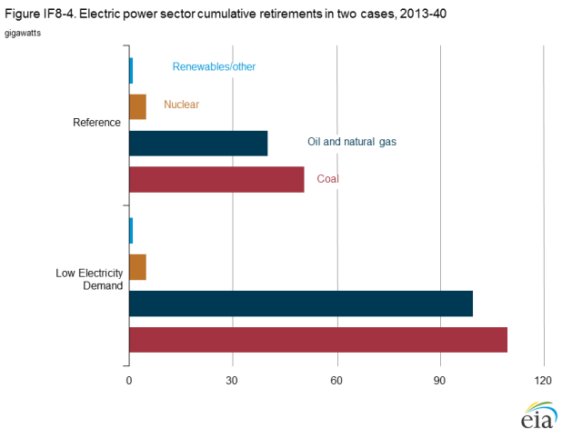

Implications of low electricity demand growth
Release Date: 4/30/14
Although electricity demand fell in only three years between 1950 and 2007, it declined in four of the five years between 2008 and 2012. The largest drop occurred in 2009 (Figure IF8-1). One contributing factor was the steep economic downturn from late 2007 through 2009, which led to a large drop in electricity sales in the industrial sector. Other factors, such as efficiency improvements associated with new appliance standards in the buildings sectors and overall improvement in the efficiency of technologies powered by electricity, have slowed electricity demand growth and may contribute to slower growth in the future, even as the U.S. economy continues its recovery.
figure data
In the Reference case, which assumes no new efficiency standards beyond those already in place or announced as final for future implementation as of 2012, total electricity use grows by an average of less than 1% per year from 2012 to 2040. Demand grows across all sectors, with average annual increases in the industrial sector (0.9% per year) slightly higher than those in the residential and commercial sectors (0.7% and 0.8% per year, respectively). As a result of rising demand, 351 gigawatts (GW) of new electricity generating capacity is added from 2012 to 2040, electricity generation increases by 29%, and carbon dioxide (CO2) emissions from the electric power sector increase by 11%.
To examine the energy implications of slower growth of electricity demand, AEO2014 includes a Low Electricity Demand case, in which annual electricity demand in 2040 is only slightly higher than the 2012 level of 3.8 trillion kilowatthours (kWh).
Low Electricity Demand case
Electricity demand growth depends on economic growth, relative energy prices, and technology choices in the end-use sector, among other factors. Changes in electricity demand result in corresponding changes in electricity generation and the mix of technologies used to meet demand.
The Low Electricity Demand case was developed by assuming changes in technology choices and higher efficiency in the end-use sectors. To limit the number of competing influences, macroeconomic and fuel supply assumptions were unchanged from those in the Reference case. The goals for the Low Electricity Demand case were to identify a combination of technologies that would result in flat demand, and to examine the impacts of stagnant demand on future needs for electricity generation and supply.
The Low Electricity Demand case uses the assumptions incorporated in the Best Available Demand Technology case for both the residential and the commercial sectors, as described in Appendix E and the Market Trends section of this report. The Best Available Demand Technology case assumes that all future equipment purchases in the residential and commercial sectors will be made from a menu of technologies that includes only the most efficient models available in a particular year, regardless of cost. Building shell efficiencies also are assumed to improve relative to the Reference case, and distributed generation costs are assumed to decline much faster than in the Reference case. In addition to those assumptions, the Low Electricity Demand case assumes higher energy savings for electric motors in pumps, fans, and air compressors used in the industrial sector compared with the Reference case. Those adjustments reduce total electric power consumption by electric motors slightly less than 20% over the course of the projection. Although technically plausible, such a drop in electric motor energy usage may not represent a likely path for motor development.
As a result of changes across all end-use sectors in the Low Electricity Demand case, retail electricity sales in 2040 are roughly the same as in 2012. Industrial sales grow slightly from 2012 levels, but a decline in residential sales offsets that growth. Because the distributed generation assumptions in the buildings sector result in higher investment in end-use renewable capacity and generation relative to the Reference case, direct-use generation increases, and there is a 7% increase in total electricity consumption from 2012 to 2040, as compared with 29% in the Reference case (Figure IF8-2).

figure data
Analysis results
Electricity generation capacity
In the Low Electricity Demand case, little new capacity is added in the power sector after planned capacity additions are completed (Figure IF8-3). A significant amount of renewable capacity is added in the end-use sectors as a result of the lower cost assumptions for distributed solar photovoltaics, and a smaller amount of renewable capacity (19% of total renewable additions) is added in the power sector to meet renewable portfolio standards. Total natural gas capacity added is only one-quarter of the amount in the AEO2014 Reference case. Even more so than in the Reference case, there are few new additions of coal or nuclear capacity beyond those already under construction.
With lower demand for electricity, a total of 110 GW of older coal-fired generating capacity is retired between 2013 and 2040
in the Low Electricity Demand case, more than double the 51 GW retired in the Reference case (Figure IF8-4). Most of the
retirements occur early in the projection, due to the timing of the Mercury and Air Toxics Standards (MATS), which require a
decision to retire or retrofit coal plants to meet environmental standards by 2016. A total of 100 GW of oil- and gas-fired capacity
is retired between 2013 and 2040 in the Low Electricity Demand case, compared with 40 GW in the Reference case.
figure data
Electricity generation
Electricity generation in 2040 is 17% lower in the Low Electricity Demand case than in the Reference case, with natural gas-fired
generation 472 billion kWh lower and coal-fired generation 343 billion kWh lower. Figure IF8-5 shows total electricity generation
from the electric power sector and the end-use sectors, with the contributions broken out for natural gas and renewable generation
to display the relative levels of generation from the end-use sectors. As in the Reference case, natural gas-fired generation overtakes
coal-fired generation by the end of the projection period, but overall shares for both fuels are lower than in the Reference case. In 2040, the coal share of total generation drops from 37% in 2012 to 32% in the Reference case, and to 31% in the Low Electricity Demand case. The natural gas share, which increases from 30% in 2012 to 35% in 2040 in the Reference case, grows to only 32% in 2040 in the Low Electricity Demand case. Because there is less need for new generating capacity, there is less opportunity for growth in natural gas-fired generation from new plants.
figure data
Nuclear electricity generation is slightly lower in the Low Electricity Demand case than in the Reference case, as a result of fewer new builds, but it provides a slightly higher share of total generation than in the Reference case. Renewable generation grows by 60% from 2012 to 2040 in the Low Electricity Demand case, slightly less than the 69% growth in the Reference case, as a large increase in end-use sector renewable generation offsets much of the decline in renewable generation in the electric power sector compared with the Reference case.
Emissions
The lower level of generation from fossil fuels in the Low Electricity Demand case results in lower greenhouse gas emissions. In 2020, power sector CO2 emissions are 16% lower than in the Reference case, and in 2040 they are 22% lower (Figure IF8-6). Emissions of other pollutants (sulfur dioxide, nitrogen oxides, and mercury) are also lower than in the Reference case, in proportion to coal-fired generation. The additional retirements of coal-fired capacity in the Low Electricity Demand case begin to occur in 2016, when MATS takes effect. With lower demand and prices for electricity than in the Reference case, it is less economical to install retrofits to comply with the MATS standards. As a result, fewer environmental controls are added.
Regional impacts
The mix of fuels used to meet U.S. demand for electricity varies across the country, and the initial mix can affect regional projections in the different cases. In general, the West is more reliant on natural gas and renewable generation, the upper Midwest and Central parts of the country are more reliant on coal, the Northeast is more reliant on natural gas and nuclear power, and in the Mid-Atlantic and Southeast there is a mix of generation from coal, nuclear power, and natural gas.
Currently, most coal-fired capacity is installed in two North American Electric Reliability Corporation (NERC) regions: the SERC
Reliability Corporation (SERC) region, which covers the Southeast region, and the Reliability First Corporation (RFC) region, which includes most of the Mid-Atlantic and Ohio Valley region [1] (Figure IF8-7). Most of the coal retirements in both the Reference case and the Low Electricity Demand case occur in those regions.
figure data
In the RFC region, retirements of coal-fired capacity in the Low Electricity Demand case are double those in the Reference case, and in the SERC region they are nearly triple those in the Reference case. The RFC and SERC regions also contain 67% of the country's current nuclear capacity. However, as in other regions, there are no additional retirements of nuclear capacity in the Low Electricity Demand case relative to the Reference case. As a result, nuclear generation levels are similar in the two cases, and they make up a higher share of the total generation when electricity demand is lower. In SERC, the coal share of total generation in 2040 declines from 38% in the Reference case to 34% in the Low Electricity Demand case, and the nuclear share grows from 23% in the Reference case to 28%. Similarly in the RFC region, the 2040 coal share drops from 44% in the Reference case to 40% in the Low Electricity Demand case, and the 2040 nuclear share rises from 21% to 26%. In both regions the natural gas share also declines slightly in the Low Electricity Demand case relative to the Reference case, because fewer new natural gas-fired power plants are built. Additional retirements of older oil and gas units have less effect on generation than do retirements of coal units, because the oil and gas units typically operate less frequently throughout the year.
In contrast, in regions where there may not be more economical baseload technologies available, coal continues to provide most of the generation needs in 2040, even when electricity demand is assumed to be flat. In the Midwest Reliability Organization (MRO) region, coal-fired plants provided 60% of total generation in 2012, and they still provide 52% in the Reference case and 55% in the Low Electricity Demand case in 2040. With few new natural gas-fired additions projected in the Low Electricity Demand case, coal-fired power plants continue to provide a large portion of the region’s total electricity generation.
Endnotes
- See Appendix F for a map of the Electricity Market Model (EMM) regions. For this discussion, results at the EMM level have been aggregated to the larger NERC regions on which they are based.
Comments
Read what others are saying …
Be the first to comment!